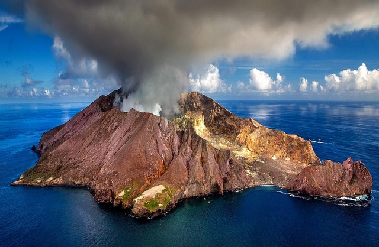

A szigetek minden oldalról vízzel körülvett, önálló szárazföldi területek a tengerekben, óceánokban, tavakban vagy folyókban.

A szigetek elszigeteltségük miatt gyakran az evolúció valóságos laboratóriumaiként működnek, így sok helyen csak ott élő, különleges fajok fejlődtek ki. Emellett egyes szigetek - például a vulkáni eredetűek vagy a tengerszint emelkedésével érintettek - folyamatosan formálódnak, így akár egy emberöltő alatt is látványosan megváltozhat a méretük vagy megjelenhetnek újak.
Tudj meg többet!| Sziget neve | Elhelyezkedés | Terület (km²) |
|---|---|---|
| Grönland | Atlanti-óceán | 2 166 086 |
| Új-Guinea | Csendes-óceán | 785 753 |
| Borneó | Csendes-óceán | 748 168 |